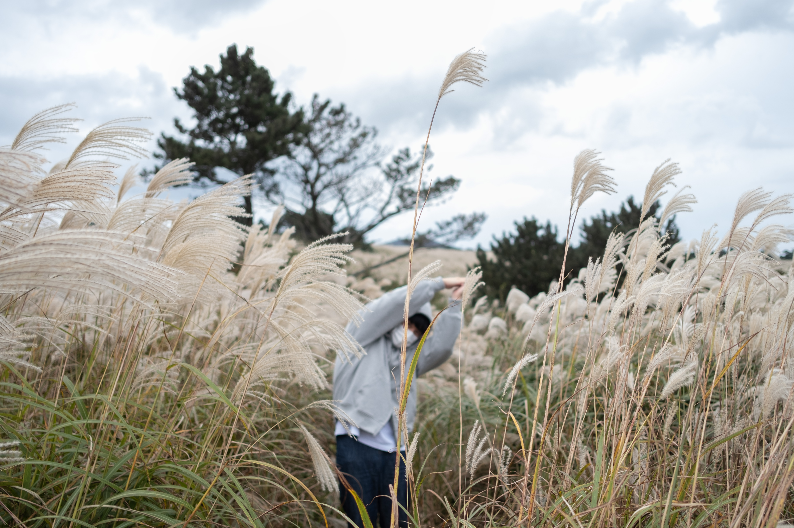
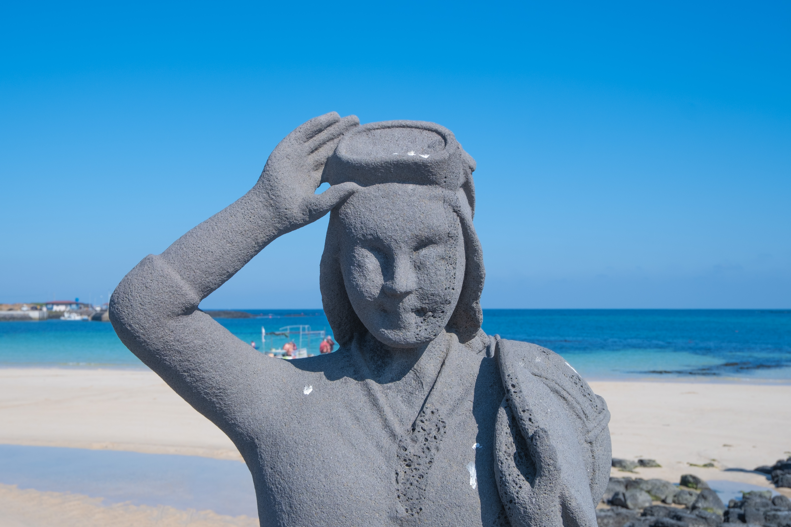
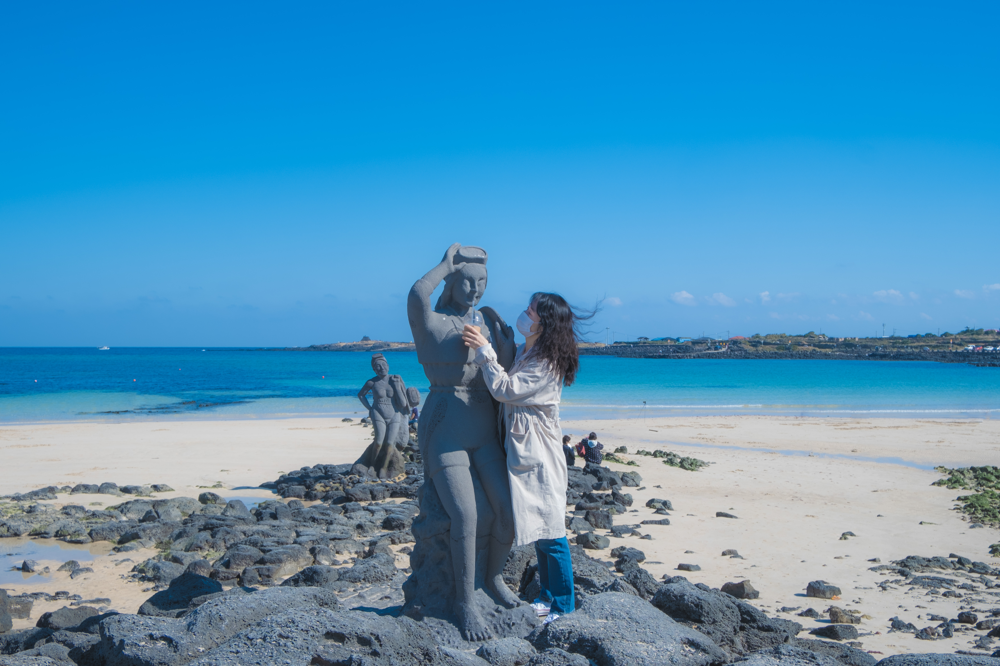
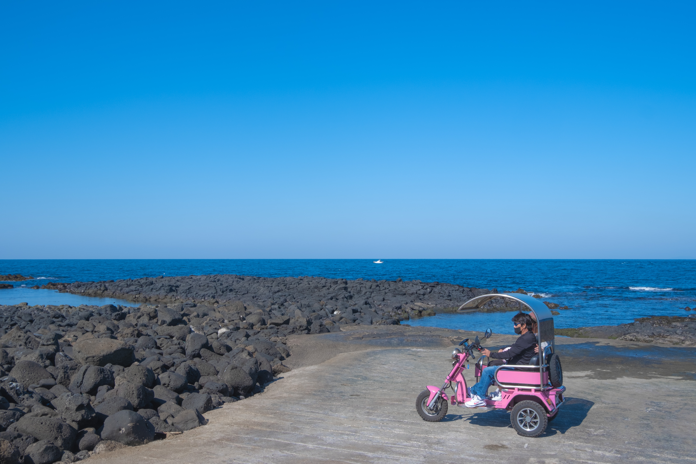

아르떼 뮤지엄도 갔답니다! 빛으로 휘황찬란하게 꾸며놨더라구요. 유명 화가들의 작품이 제일 많았고, 빛으로 표현한 파도, 정글 등등이 있었는데 입장료는 너무너무 비쌌지만 볼거리가 정말 많은 곳이었어요. 사진은 많이 찍었는데 지금 있는 사진이라곤 이 귀여운 바보 한라봉들 뿐..... 그리고 최강의 듀오 감귤형제...



우리가 머물게 될 펜션으로 향하는 길에 억새 밭을 발견했어요, 절대 그냥 지나칠 수 없지! 아빠 저기 가자!! 그리곤 가서 사진들을 찍었어요. 근데 동생이 뭔가 예술가처럼 나왔어요 그리고 저는 한 낱 인간 억새..

숙소로 돌아와서 잠을 조금 잤더니 밤에 잠이 안 오더라구요. 그래서 12시 30분쯤 혼자 산책을 나갔어요. 그런데 이게 뭐야 별이 떠 있었답니다! 그래서 바로 카메라와 삼각대를 챙겨 생에 첫 별 사진을 찍기 시작했어요. 별 사진을 찍으면서 내가 사진 찍는 걸 정말 좋아하구나 하고 또 한 번 느꼈어요. 심장이 쿵쿵 뛰더라구요. 처음엔 사진이 너무 어둡게 나와서 이렇게도 저렇게도 해보다가 결국 밤하늘을 담아냈답니다. 얼마나 뿌듯했는지 몰라요. 다음엔 꼭 국내 별 명소를 가서 은하수까지 담아내고 싶다는 욕심이 차올랐답니다!


다음 날은 원래라면 제가 만들어놓은 다른 일정들이 많았지만, 엄마가 우도를 너무 가고 싶다고 하셔서 모든 걸 버리고 우도로 떠났답니다!





제주도는 바다 부자인 게 틀림 없어요. 평소에도 바다가 좋아 광안리를 제 외출 빈도에 비해 자주 갔었는데 제주의 바다는 광안리와도 비교가 안 될 정도로 아름다웠어요. 보기만 해도 마음이 편안해지고 힘들었던 일들을 잊게 해주는 거 같아요. 깊은 만큼 우리의 고민들을 대신 담아가는 게 아닐까 생각했어요. 우도의 이름 모를 해변을 지나다가 너무 예뻐 걸음을 멈추지 않을 수가 없었어요. 그 곳에 있던 해녀 동상에게도 인사하고(진짜 인사했어요) 엄마의 친구로도 만들어줬답니다^^.


그리고 마지막으로 갔던 곳은 두구두구 제가 제주에서 제일 기대했었던 비밀의 숲!! 하지만..... 날씨도 그렇고 시간대도 그렇고 숲과 전혀 어울리지 않을 때에 가서 숲의 몽황적인 느낌을 느끼지 못 했답니다... 그래서 너무 아쉬웠어요. 하지만 사진은 기획! 가족들이랑 귀여운 사진도 하나 건지도 제 사진도 건지고 누가누가 제일 높은가! 서로 자기가 더 크다고 말하는 거 같은 키다리 나무들도 보고 나름 괜찮았어요!
~.~
아주 짧았던 생애 첫 가족여행을 끝마쳤어요. 가족끼리 가는 첫 여행이라 갈등도 조금 있었고 다들 취향도 많이 달라 힘들기도 했지만, 즐거운 여행이었어요. 사실상 제가 불만이 제일 많았어요 ㅎㅎ.. 다음엔 계속 웃기만 했으면 좋겠어요. 아빠와 여행을 해보니 정말 많은 생각이 들더라구요. 다들 걷고 구경할 때 혼자 뒤쳐져 계속 안 오고 담배를 피는 모습이 여행 당시에는 조금 짜증이 나기도 했지만, 지금 생각해보면 지금껏 일만 하느라 여행 경험도 많이 없고 여행 후에 해야할 미뤄놓은 일들 때문에 여행 자체를 온전히 즐기지 못 한 게 아닐까 하는 생각이 들어요. 다음엔 아빠가 가고 싶고 하고 싶어하는 걸 하고 싶어요. 그럴 수 있을지 모르겠지만... 취향이 좀 다른 거면 할텐데 아빠는 죄다 담력이 필요한 걸 하고 싶어해서............. 다는 아니라도 용기를 내보려구요?......